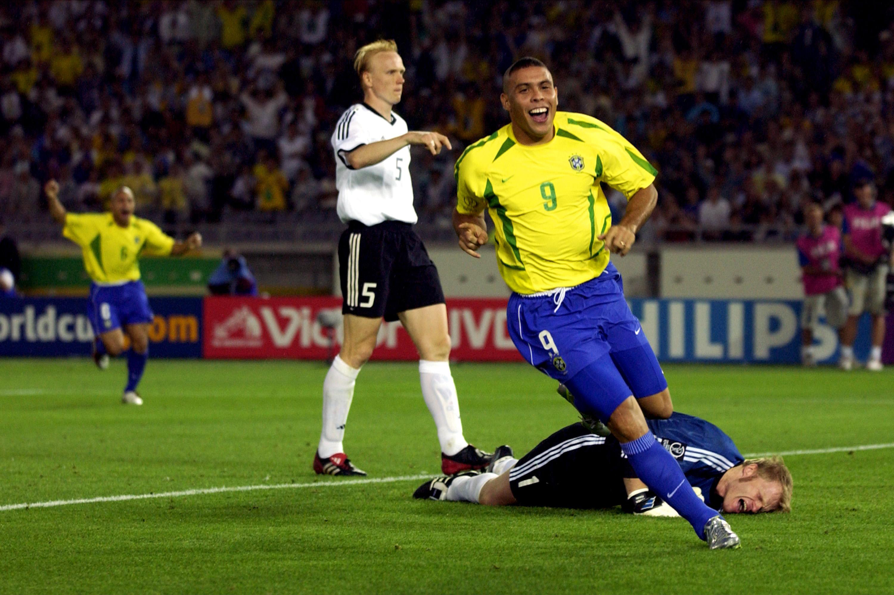

Formada em 1914 e considerada um dos maiores símbolos do país, é chamada de "Seleção", "Seleção Canarinho" ou "Verde-Amarela". É a seleção mais bem-sucedida da história do futebol mundial, sendo a recordista em conquistas em Copas do Mundo, com cinco títulos invictos (1958, 1962, 1970, 1994 e 2002) e quatro títulos da Copa das Confederações FIFA (1997, 2005, 2009 e 2013).
Dentre outras conquistas importantes, a seleção detém nove títulos da Copa América (1919, 1922, 1949, 1989, 1997, 1999, 2004, 2007 e 2019). Conquistou ainda quatro Copa das Confederações FIFA (1997, 2005, 2009 e 2013), competição na qual também é a maior vencedora da história. Nos Jogos Olímpicos de 2016, sediados no Rio de Janeiro, conquistou pela primeira vez a medalha de ouro, vencendo a seleção alemã nos pênaltis. Tem como maior rival no esporte a Argentina.
A Seleção Brasileira é muito lembrada quando se fala de futebol arte já que, desde 1958 engrandece o futebol mundial com grandes nomes que com a amarelinha impressionaram e fizeram história. Pelé lidera a longa lista de craques brasileiros, considerado um dos maiores jogadores de todos os tempos. Contemporâneo de Pelé, Garrincha, o eterno "anjo das pernas tortas" de dribles desconcertantes, abrilhantou os gramados com seu futebol. Outros grandes que encantaram não só o Brasil mas o mundo foram Didi, Nilton Santos, Djalma Santos, Rivellino, Gérson, Jairzinho, Carlos Alberto, Tostão, Júnior, Zico, Sócrates, Falcão, Taffarel, Romário, Bebeto, Cafu, Roberto Carlos, Ronaldo, Rivaldo, Ronaldinho, Kaká e atualmente o Neymar.
